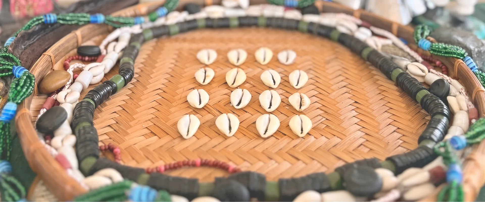

Main Content Section
This section scrolls at normal 1x speed, covering the slower-moving hero image.

A community home for Candomblé in Australia — honouring tradition, ancestry and the orixás through ceremony, learning and care.
This section scrolls at normal 1x speed, covering the slower-moving hero image.